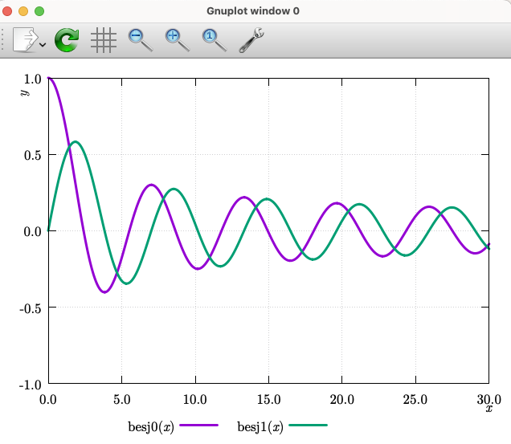

gnuplotのコードに雛形を以下に示す．Fontは各自で読み替えてください．
reset
mode = 2
## change mode for output file format
## 1 : "eps"
## 2: = "qt"
if (mode == 1){
##################
## for epscairo ##
##################
set terminal epscairo enhanced color \
font "NewComputerModern10,17" size 4in, 3in
### use appropriate mode: "color" or "mono"
set output "out.eps"
## if theta exists, use "NewComputerModernMath"
## argument x, y, ... should be {/NewComputerModern10:Italic x}
set tics font "NewComputerModernMath, 17"
set xlabel font "NewComputerModern10:Italic, 17"
set ylabel font "NewComputerModern10:Italic, 17"
##set zlabel font "NewComputerModern10:Italic, 17"
set key font "NewComputerModernMath, 17"
set lmargin at screen 0.13
set xtics offset 0,graph 0.05
set ytics offset 0,0
set xlabel offset graph 0.5, graph 0.15 enhanced
set ylabel offset graph 0.055, graph 0.45 enhanced rotate by 90
set key spacing 1.6
set key below center offset 0, graph 0.05
}
else if (mode == 2){
############
## for Qt ##
############
set terminal qt font "NewComputerModern10:Regular, 17" enhanced
## if theta exists, use "NewComputerModernMath"
## argument x, y, ... should be {/NewComputerModern10:Italic x}
## font setting
set tics font "NewComputerModern10:Regular, 17"
set xlabel font "NewComputerModern10:Italic, 17"
set ylabel font "NewComputerModern10:Italic, 17"
##set zlabel font "NewComputerModern10:Italic, 17"
set key font "NewComputerModernMath:Regular, 17"
## position setting
set lmargin at screen 0.10
set xtics offset 0,graph 0.015
set ytics offset 0,0
set xlabel offset graph 0.5, graph 0.07 enhanced
set ylabel offset graph 0.055, graph 0.45 enhanced rotate
set key spacing 1.6
set key below center
}
else{
print "mode is illegal"
exit
}
###########################################
### for plotting
## argument x, y, ... should be {/NewComputerModern10:Italic x}
set grid
set tics format "%.1f"
set xrange [0:30]
set yrange [-1:1]
set xlabel "x"
set ylabel "y"
plot besj0(x) lw 3 title "besj0({/NewComputerModern10:Italic x})",\
besj1(x) lw 3 title "besj1({/NewComputerModern10:Italic x})"
set term qt
exitこれを実行すると，次のようなグラフが表示される．
